audio-technica（オーディオ・テクニカ）
�T.カートリッジ
注 テクニカのアナログ関連製品は時代により型番に「-（ハイフン）」が入ったり、入らなかったりする。このサイトではすべて「-（ハイフン）」を入れて表記する。また同社のMC型は名称の末尾に「MC」とつけて表記される場合が多いが、これは省略する。
1.初期（〜1973年）のカートリッジ
�@MM型カートリッジ
テクニカの最初のカートリッジAT-1（1962年）はMM型カートリッジだった。モノラル再生用のAT-3M以外は1970年代前半で姿を消す。交換針のリストからみて、AT-1、3シリーズの他、AT-6、8などがあったようだ。AT-6、8は市販モデルではなく、他社への供給用モデルだったようだ。AT-6,8については、「6.(番外その2）他社向け製品」を参照。
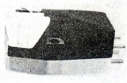 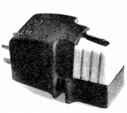
AT-1 AT-3 AT-3S AT-3M AT-5 AT-7S
�AIM型カートリッジ
1960年代末から1970年代初頭に、「超ハイ・コンプライアンス、高安定ワイヤード・ダンパー２重励磁方式」＝DMタイプと同社が宣伝していたのがAT-21シリーズである。50ミクロン厚のスーパー・パーマロイを振動子とし、2つの磁路を通して発電する構造らしい。Stereo
Sound YEAR
BOOKではIM（インデュース・マグネット）型に分類しているし、同社のカタログでもIM型の欠点を克服した製品としている。1970年代前半で姿を消す。
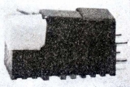
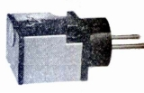
２.VM型カートリッジ
カッターヘッドの動作を模したテクニカ・オリジナルの方式。1969年には海外特許も取得し、当時海外製品の影響が強かった国内カートリッジの世界では異例の存在だった。
�@初期の製品
シュアやエラックのMM型のパテントに抵触しない、テクニカ独自の方式。実用上はMM型に準ずる。1967年発売のAT-35Xが最初の製品。AT-VM3はAT-3の後継モデルに位置づけられたモデル。
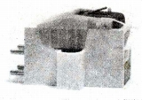 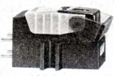 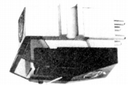
AT-VM3 AT-VM3X AT-VM8 (左記の3機種は針の互換性あり）
AT-VM35 AT-VM35F AT-35X (AT-VM35とAT-35Xは針の互換性あり。AT-VM35Fについては不明）
�AAT-10シリーズ
価格別のバリエーションが明確になったシリーズ。このシリーズで垂直トラッキングアングルが、古典的な15度から20度に改められたようだ。前期のAT-10d〜AT-20SLaのラインナップと、シェル一体型のAT-25などと併売された後期のAT-10G〜AT-15Eaのラインナップがある。AT-10G及びこのバリエーションAT-10G
RDは現役（2018年5月現在）モデル。
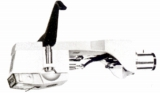 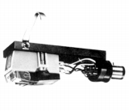
AT-10d AT-11d AT-12d AT-13d AT-14E AT-14Sa AT-15E AT-15Sa AT-20SLa
AT-10G AT-11G AT-12E/G AT-13E/G AT-14Ea/G AT-15Ea
�Bシェル一体機種
当時流行していたシェル一体型の最上級がAT-25。ジュニア版がAT-23。AT-25の内容を一般型にまとめたのがAT-24。
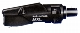
�CAT-100シリーズ
AT-10シリーズの次の製品群。2000年代以降、長らくトップモデルであったAT-150MLXはこのラインナップのもの。
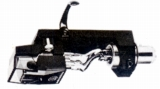 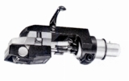 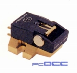
AT-105/H AT-110E/H AT-120E/G AT-130E/G AT-140E/G AT-150E/G
AT-120Ea/G AT-130Ea/G AT-140Ea/G AT-150Ea/G AT-160ML
�DAT-Eシリーズ
アナログレコードに対してCDが次第に優勢になってきた時代の製品群。シリーズ名のEは「楕円(Elliptical)針」からとった。最上位機種のAT-E90でシェル付き\20,000と従来シリーズよりは価格を抑えたシリーズだった。AT-E30/50/70/90が基本的な構成だが、このシリーズの鳥のくちばしを思わせるデザインを生かして、外観をペンギンに見立てたのがAT-E32。TP4規格にあわせたAT-E32Pも存在する。次世代のAT-MLシリーズ
の登場で上位機種は早く姿を消したが、ヘッドシェル付きの「AT-E30/L」が2000年過ぎまで残った。
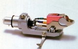
AT-E30 AT-E32 AT-E50 AT-E70 AT-E90
�EAT-MLシリーズ
AT-Eシリーズからさほど時間をあけずに登場したマイクロリニア針装備のVM型上級シリーズ。ベーシックモデルのAT-ML140がAT-E90と同価格だった。 当初はLC-OFC素材でスタートしたが、短期間でOCC素材モデルに変更された。AT-ML150/OCCが比較的長く残ったが、2000年を待たずして消滅。
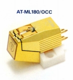
AT-ML140 AT-ML150 AT-ML170 AT-ML180
・コイル、リード線、出力端子の電気信号系をPC-OCCに置き換えた製品群。価格は据え置き、交換針は共通。
AT-ML140/OCC AT-ML150/OCC AT-ML170/OCC AT-ML180/OCC
�FAT-Vシリーズ
純粋なオーディオ用としては、事実上最後のシリーズ〈2010年代のレコードのリバイバルな流行に乗ったモデルは除きます）。PC-OCCなど新素材を取り入れたベーシックモデル。AT-7V （AT7Vに改称)はロングランモデルとなった。標準針圧は2g。
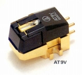
�GAT-G、DSシリーズ
ＤＪ用などのヘビー・デューティ機。
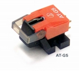
(AT-G5)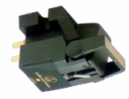
(AT-DS7)
３.MC型カートリッジ
�@AT-33系
VM型カートリッジと同様の思想のデュアル・ムービングコイルタイプ。テクニカの本格的なMC型はシェル一体型のAT-34から始まった。コイルを逆Vの字型に配置したタイプ。やがてその技術内容を引き継ぐAT-33シリーズがテクニカのMC型を代表する商品となる。盛時には下位の廉価機種複数発売された。
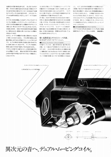 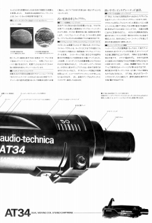
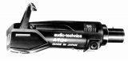 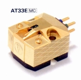 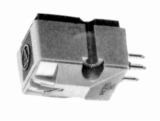
AT-33E AT-33ML AT-33ML/OCC AT-33LTD AT33-VTG AT-33PTG
AT-Mono AT-Mono3/LP AT-Mono3/SP
�AAT1000系
テクニカのカートリッジの歴史の中で、レコード時代の最高級モデルであるAT-1000とその技術・デザインを受け継いだ機種。
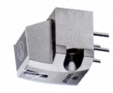
�B針交換機種
AT-34の次に登場したのが針交換可能な構造を持つAT-30Eだった。その上位機種が
AT-31E。テクニカのMC型の本流（逆Vの字型）とは異なるVの字型にコイルを配置した製品だった。AT-UL3/5はCDの普及がだいぶ進んだ時期に短期登場した針交換タイプの廉価版MC型。
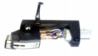 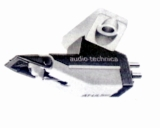
�CAT-Fシリーズ
AT-UL3/5に代わり入門用MC型として登場したシリーズ。AT-MLシリーズと同様に当初はLC-OFC素材のAT-F3/5でスタートしたが、短期間でPCOCCのAT-F3�Uに変更された。現在ではAT-F2、7となっている。
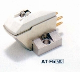
�DAT-OCシリーズ
上位機種の生産停止でAT-FシリーズとAT-33系モデルの中間機種としてスタートしたシリーズ。
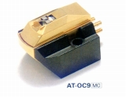
�Eその他
最上位機種AT-1000の生産終了後、テクニカの最高級機として登場したがAT-ART1。AT-ART2000はテクニカお得意の2000年限定生産機種、ボディデザインはAT-OCシリーズに近い。
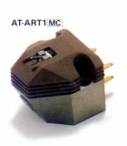
4.TP4製品
テクニクスが提唱したリニアトラッキング・プレーヤーなど向けのカートリッジの規格がT4P。サイズや針圧（標準＝1.25g)など制限の多い規格だが、テクニカはかなり多くの製品を投入した。
�@ＶＭ型
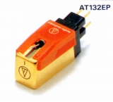
AT-102P AT-112EP AT-122EP AT-132EP AT-152LP
�AMC型
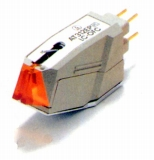
5.(番外）海外向け製品
オーディオメーカーは海外市場向けには、国内モデルと異なった製品を用意することがしばしばある。手元にある1982-83年版英語カタログの機種を収録する。国内モデルと重複しているのはVM型でAT-105、AT-110E、AT-120E、AT-130E（ただし国内とは違いシェルなしで販売していたらしい）、TP4製品はAT-132EP、AT-152LP、MC型はAT-1000、AT-34E�U、AT-33E、AT-32E、AT-31E、AT-30Eである。なおこのカタログの掲載機種では、カートリッジ以外の海外モデルは確認できなかった。
�@ＶＭ型
当時の国内のAT-100シリーズモデルではAT-160MLしかリニアコンタクト系の針のモデルがなかったが、輸出モデルでは3モデルがあったようだ。AT-55〜59XEはオルトフォンのコンコルドに似たローマスカートリッジ、基本はAT-55XEで57、59はデザイン違いのシェル一体式モデル。AT-91〜95Eはベーシックモデル。
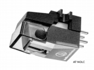
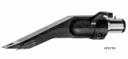
(左 AT-140LC 右 AT-57XE)(AT-100シリーズ) AT-125LC AT-140LC AT-155LC
(それ以外の機種) AT-55XE AT-57XE AT-59XE AT-91 AT-93 AT-95E
�AMC型
AT-30HEは国内モデルのAT-30Eの高出力バージョン。AT-3100XE/3200XEは針交換式MC型の入門機。
AT-3200XEは3100XEの高出力バージョンのようだ。
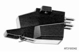
(AT-3100XE)
6.(番外その2）他社向け製品
最近、変わった資料を入手した。テクニカがVM型を発売する前、1960年代の資料で英文主体のカタログであり、一般向けではなく産業用か、他社供給用の製品も掲載されていた。それによればMM型時代のカートリッジAT-6は、自社販売用でなく、他社向けの製品だったようだ。そしてカートリッジを組み込んだアームという形でも供給したようだ。他に軽針圧型のAT-8があった。また70年代以降もAT-70シリーズなど他社供給専用モデルはあったらしい。
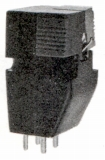
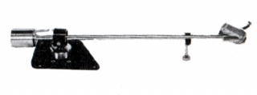
(AT-6とそれを組み込んだアームP-1102)
�U.昇圧用トランス・ヘッドアンプ
同社の本格的なMC型カートリッジが1977年発売のAT-34の為、昇圧用トランスの歴史は同じ時期にデビューしたAT-630からスタートする。単機能のAT-630とインピーダンス切替式の650、最高級カートリッジAT-1000とペアのAT-1000Tとその流れを汲む700T/670Ｔ、トランスの巻線にPCOCCを採用したAT-800T/OCCと660T/OCCの三つの世代がある。2000年以降の製品(2006年：AT5000T等）発売もあるが、1990年代初頭にに一度生産が途切れた。なおテクニカのヘッドアンプは確認できなかった。
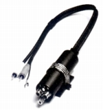
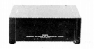
(左 AT-630 右 AT-1000T)�V.トーンアーム
カートリッジ、トランスよりも先に生産が終わったのがアームである。1980年代半ばに業務用のAT-1503/1501シリーズを残し生産中止となり、1990年代前半に姿を消した。その後2002年にAT-1503�Vの改良機（AT1503�Va）が発売された。
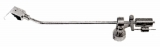
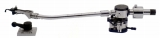
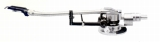
（左 AT-1001 中央 AT-1009 右 AT-1010)AT-1001 AT-1003 AT-1005 AT-1007
(AT-1503/1501シリーズ）
テクニカのAT-1503/1501シリーズは業務用のロングランのアームのシリーズ。付属機能がないシンプルなアーム。基本的にAT-1503と1501同じモデルで通常のものが1503、ロングアームが1501。第3世代以降の価格の変化はアームを取り巻く環境の変化を如実に表す。
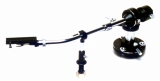
(AT-1503�V）AT-1503/1501 AT-1503�U/1501�U AT-1503�V/1501�V AT-1503�W/1501�W
�W.ヘッドシェル
テクニカのヘッドシェルの名称は、材質などを表すアルファベット（例 マグネシウムなら「M」）と重量を表す数字の組合せで成り立つものが多い。しかし昔（1973年頃）は、あまり細分化していない為、アルファベット別になっていた。その後構造と重量による型番になった。
�A1970年代後半以降のシェル
・D、S、Ｔ型 ・LTシリーズ ・LSシリーズ ・LHシリーズ ・MGシリーズ ・MSシリーズ ・CFシリーズ（ストレートアーム用）
�X.シェルリード
�Y.その他
�Aスタビライザー
�Bクリーナー
�Cその他